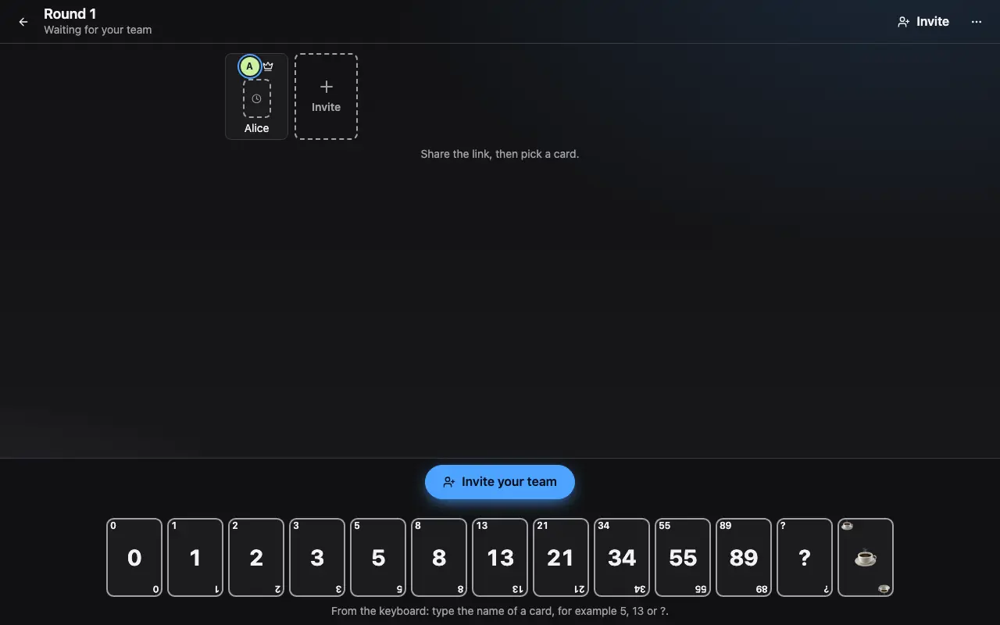

Estimate with Scrum Poker (beta)
A poker room to estimate as a team: everyone picks a card and nobody sees the others until the reveal. No account, encrypted like a board.
Scrum Poker is a room for estimating together: everyone picks a card, nobody sees the others, and the cards turn over at once when the moderator reveals them. It is in beta: stories, a timer and exports are not there yet. There is no account, and the room is encrypted like a board: the link carries the key after the #, so the server only ever sees ciphertext and keeps nothing.
1 Pick a deck (Fibonacci, T-shirt, powers of 2, or your own list), then create the room in one click.
Find Scrum Poker on the home page, in the boards menu or on the library page. Pick a deck (Fibonacci, modified Fibonacci, T-shirt, powers of 2) or type your own cards separated by commas, for example 1, 2, 4, 8, ?: they show as round chips. Then press Create the room.


2 The room gives the link and QR code to share, the table and your hand of cards: the cards stay hidden until the reveal.
Type a name and join: that is all that is asked. You are the moderator. Copy the link (or show the QR code, or use Share on a phone) and send it to the team: a person who opens it types a name and sits at the table. Each person picks a card by tapping it or by typing its name on the keyboard (5, 1 then 3 for 13, ?). The table shows who has voted, never what. The moderator presses Reveal: every card turns at once, with the average, the median, the most chosen card, the spread, the agreement and a suggested card. Vote again starts another round on the same item, Next round a fresh one. Reloading the page keeps your seat and your card. A room holds 20 voters; later arrivals watch.

